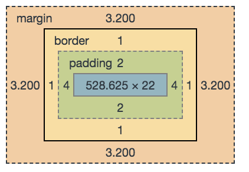
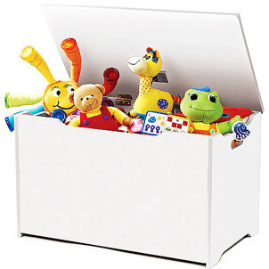

What We Will Cover
- Syntax & Definitions
- The Casscade
- Placing CSS (external / internal / inline)
- Pre‑processors
- Semantic CSS
- Things to Google
CSS
How HTML markup should Look
Rules
How CSS applies style to HTML elements
HTML:
This text will be green!
CSS:
.my-selector {
color: green;
}
Rule Anatomy

Box Model
Elements are generally either Block or Inline.
Inline Elements
Limited ability to style!
This is a sentence with an inline element in it.
Block Elements
Style everything!

This is a block element. It takes up the full width.
Live Coding!
Example!
Selectors
How CSS knows what elements to apply rules to
element Selectors
Selects all elements of the same type
HTML:
I'm the first heading — green!
I'm the second heading — also green!
CSS:
h3 {
color: green;
}
Result:
I'm the first heading — green!
I'm the second heading — also green!
.class Selectors
Selects all elements with a particular class
HTML:
I'm a div — orange!
I'm a paragraph — also orange!
CSS:
.my-class-selector {
color: orange;
}
Result:
I'm a div — orange!
I'm a paragraph — also orange!
#id Selectors
Selects a single element with a particular ID
CSS:
#my-id-selector {
color: blue;
}
Result:
I'm a div — blue!
Compounding Selectors: pt 1
no space == same element
CSS:
div.headline {
color: green;
}
/* or */
.headline.fancy {
color: green;
}
Compounding Selectors: pt 2
space means parent → child selector
HTML:
I'm the first subtitle
I'm the second subtitle
CSS:
.headline h5 {
color: purple;
font-style: italic;
}
Result:
I'm the first title
I'm the second title
Easy, right?
What now?
CSS:
h1 {
color: red;
}
h1 {
color: green;
}
What about now?
CSS:
h1 {
color: red;
}
#header {
color: orange;
}
.headline {
color: blue;
}
Now?!
CSS:
div.container h1 {
color: red;
}
#header {
color: orange;
}
.container .headline {
color: blue;
}

Enter: The Cascade
Cascade: Order
"Styles loaded later override those loaded earlier"
Physically lower styles take prescedence
h1 {
color: green;
}
div {
color: blue;
}
h1 {
color: orange; /* h1 will be orange */
}
Cascade: Specificity
"The more specific it is, the more I care."
Sounds Easy, right?

Element Selectors
body section h1 ==
.class Selectors
.headline.content .primary .foo ==
#id Selectors
#main #home ==
Example
body #main.container h1.headline
Example
div span span span span b i i span span i b
#id
|
.class
|
element
|
| 0 |
0 |
12 |
Which is more specific?
A: div span span span span b i i span span i a
B: .header
A:
#id
|
.class
|
element
|
| 0 |
0 |
12 |
Which is more specific?
A: #header-content
B: h3.header .header__content
Which is more specific?
A: header#header-content h2.title
B: #header-content h2.title
Nuclear Options
Use with care!

Styles on elements take prescedence
h1 {
color: green;
}
I'll be purple.
USE SPARINGLY!
I'll be purple.
!important tags
h4 {
color: orange !important;
}
#headline {
color: red;
}
I'll be orange.
USE SPARINGLY!
I'll be orange.
Three Ways to Insert CSS in HTML
External CSS
<head>
<link rel="stylesheet" href="style.css">
</head>
<body>
<h1>This is a heading</h1>
</body>
Internal CSS
<head>
<style>
body {
background-color: blue;
}
</style>
</head>
<body>
<h1>This is a heading</h1>
</body>
Three Ways to Insert CSS in HTML
Inline CSS
<body>
<h1 style="color:blue;">This is a heading</h1>
</body>
Preprocessors
What is it?
Write CSS more like "real" code
Popular Preprocessors
- Less
- Sass
- Stylus
- Post CSS (technically a post-procesor)
What can it do for me?
Use Variables
Stylus:
site.border := 1px solid #ccc
.table {
border: site.border;
}
.card {
border: site.border;
}
CSS:
.table {
border: 1px solid #cccccc;
}
.card {
border: 1px solid #cccccc;
}
Not Strict about syntax
Stylus:
.test {
color: green
}
.test
color green
.test
color: green;
/* etc.. */
CSS:
.test {
color: green;
}
.test {
color: green;
}
.test {
color: green;
}
Nest Selectors
Stylus:
.parent-class {
color: blue;
.child-class {
color: green;
}
}
CSS:
.parent-class {
color: blue;
}
.parent-class .child-class {
color: green;
}
And more!
- Functions
- Looping
- Interpolation
- Inlining Images
Semantics
Aka: Naming stuff.
What would you label this?

- "big"
- "box"
- "white"
- "100cms"
- "toys"
What would you label this?
There are only two hard things in computer science: cache invalidation, and
naming things. -Phil Carlton
NO.
.floatRight {
float: right
}
.floatLeft {
float: left
}
.Percent70Width {
width: 70%
}
.Percent20Width {
width: 25% /* WHAT?! */
}
.Height200Px {
height: 200px
}
.Height230Px {
height: 230px
}
.clear {
clear: both
}
.textarea {
height: 100px;
width: 100%
}
.displayNone {
display: none
}
#scannerImagePlaceholderDiv {
float: left;
display: block;
width: 250px;
height: 300px
}
.marginBottom30 {
margin-bottom: 30px
}
.Height40Px {
height: 55px /* WHY?! */
}
.centerText {
text-align: center
}
.bulkEditSelectionTable {
margin-left: auto;
margin-right: auto
}
.bulkEditSelectionTable th {
text-align: center;
padding-left: 5px;
padding-right: 5px
}
.bulkEditSelectionTable td {
padding-left: 5px;
padding-right: 5px
}
.width40Percent {
width: 40%
}
.width46Percent {
width: 46%
}
.width10Percent {
width: 10%
}
.width11Percent {
width: 11%
}
.width38Percent {
width: 38%
}
Name it what it IS not what it looks like.
Google this!
:before & :after pseudo elementscalc()currentColor- lobotomized owl selector
* + *
- Flexbox & Grid
- Mobile-First - writing code mobile-friendly
Questions?
laura.ramos@udea.edu.co
References